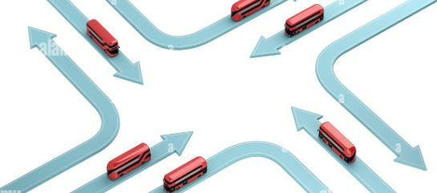

July 1, 2023
This research focuses on generating high-quality synthetic data for Industrial Control Systems
(ICS) datasets and proposes an evaluation framework for selecting the most suitable method. The
aim is to create realistic and diverse datasets while preserving privacy and addressing biases.
The comparative analysis reveals strengths, limitations, and trade-offs of different synthetic
data generation techniques for ICS datasets. The findings aid in selecting appropriate methods,
enabling further research and algorithm development in a privacy-preserving environment. This
research contributes to advancing ICS understanding, enhancing capabilities, and improving the
robustness and security of ICS systems.

The aim of this study is to determine a method for understanding ensemble models through
visual analytics. The method is used to identify and quantify the confidence levels
between the models that constitute the ensemble. This is done using an interactive
dashboard with visualizations to check the agreement and disagreement of the model's
prediction in comparison with the true class. Evaluation of the project is performed with
visualization as the core aspect of the user study. Scenarios are chosen with appropriate
questions and goals and evaluated based on the results.
In the era of online shopping and a wide range of products available, determining product
quality is time-consuming. User reviews on platforms like Amazon and blogs are crucial for
improving customer experiences. This project aims to analyze user reviews by
building a model that assesses the worthiness of suggested products. The application
gathers data from various sources, calculates aggregate sentiment, and allows users
to compare multiple products. By employing natural language processing techniques, we can
determine customer mood and trends, aiding in efficient user review analysis. This
solution benefits both customers and product owners, enhancing decision-making and
business growth.

In this project, we aim to support beginner investors by effectively predicting stock
values and trends. By analyzing historical data, we will develop a model to predict
the closing prices of stocks. This will benefit new investors, including recent graduates,
in making informed investment decisions and reducing the risk of failed investments.
Our model will also provide visual representations of the data, aiding in data
interpretation. The ultimate goal is to empower investors with accurate predictions
and visual insights, ensuring their success in the stock market.
The proposed design model focuses on age variants and face landmark variations to detect
Obstructive Sleep Apnea (OSA). Facial photographs are collected from subjects at
different
lightings, and a MATLAB model is developed using deep learning neural networks. Key
features
related to OSA, such as distances between eyes, nose, and cheek, are extracted using
a
convolutional neural network. The model predicts the presence of OSA in patients based on
these
features, achieving high accuracy, precision, and recall rates.

Vehicular ad-hoc networks (VANET) is a famous and special kind of wireless
mobile ad hoc network. It is ad-hoc network where each network node acts an independent and
self-organized network. In VANET various routing protocols have
been proposed and used and they are of high importance for desirable VANET applications. In this
project we plan to propose an improved routing algorithm to
facilitate faster communication between clusters. The simulation results of position
based routing protocols are discussed in terms of packet delivery ratio and through put metrics.